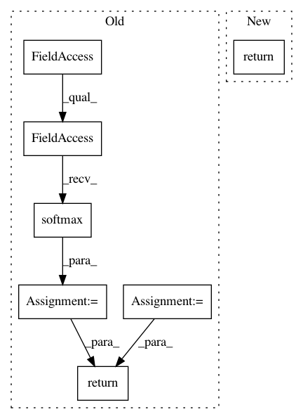

0cc04fcc2df0b2005de354a602c9a16821fa4b2f,pyprob/nn.py,ProposalPoisson,forward,#ProposalPoisson#Any#Any#,329
Before Change
stddevs = x[:, self._mixture_components:2*self._mixture_components]
coeffs = x[:, 2*self._mixture_components:3*self._mixture_components]
stddevs = F.softplus(stddevs)
coeffs = F.softmax(coeffs, dim=1)
prior_means = torch.stack([s.distribution.mean[0] for s in samples])
prior_stddevs = torch.stack([s.distribution.stddev[0] for s in samples])
prior_means = prior_means.expand_as(means)
prior_stddevs = prior_stddevs.expand_as(means)
means = prior_means + (means * prior_stddevs)
stddevs = stddevs * prior_stddevs
distributions = [TruncatedNormal(means[:, i:i+1], stddevs[:, i:i+1], 0, 40, clamp_mean_between_low_high=True) for i in range(self._mixture_components)]
return Mixture(distributions, coeffs)
class InferenceNetwork(nn.Module):
def __init__(self, model_name="Unnamed model", lstm_dim=512, lstm_depth=2, observe_embedding=ObserveEmbedding.FULLY_CONNECTED, observe_reshape=None, observe_embedding_dim=512, sample_embedding=SampleEmbedding.FULLY_CONNECTED, sample_embedding_dim=32, address_embedding_dim=256, valid_batch=None, cuda=False, device=None):
After Change
prior_stddevs = torch.stack([s.distribution.stddev[0] for s in samples])
means = prior_means + (means * prior_stddevs)
stddevs = stddevs * prior_stddevs
return TruncatedNormal(means, stddevs, 0, 40, clamp_mean_between_low_high=True)
class InferenceNetwork(nn.Module):
def __init__(self, model_name="Unnamed model", lstm_dim=512, lstm_depth=2, observe_embedding=ObserveEmbedding.FULLY_CONNECTED, observe_reshape=None, observe_embedding_dim=512, sample_embedding=SampleEmbedding.FULLY_CONNECTED, sample_embedding_dim=32, address_embedding_dim=256, valid_batch=None, cuda=False, device=None):
In pattern: SUPERPATTERN
Frequency: 3
Non-data size: 7
Instances
Project Name: pyprob/pyprob
Commit Name: 0cc04fcc2df0b2005de354a602c9a16821fa4b2f
Time: 2018-04-08
Author: atilimgunes.baydin@gmail.com
File Name: pyprob/nn.py
Class Name: ProposalPoisson
Method Name: forward
Project Name: cornellius-gp/gpytorch
Commit Name: 8f27fae607562177d6b840a0c0db2c67a95a88d8
Time: 2019-04-12
Author: gpleiss@gmail.com
File Name: gpytorch/likelihoods/softmax_likelihood.py
Class Name: SoftmaxLikelihood
Method Name: forward
Project Name: cornellius-gp/gpytorch
Commit Name: 79725f0aeb9a9f93617e291345c0b81add027373
Time: 2019-04-11
Author: gpleiss@gmail.com
File Name: gpytorch/likelihoods/softmax_likelihood.py
Class Name: SoftmaxLikelihood
Method Name: forward